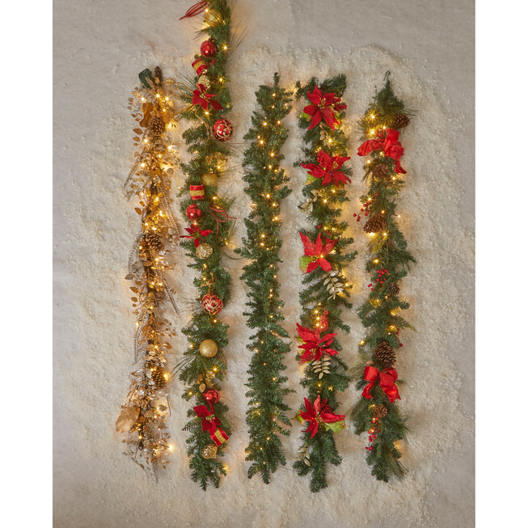

Christmas Wonderland: Your Ultimate Holiday Guide
Christmas is a magical time of year, and it's one that we all look forward to. Whether you're celebrating with family, friends, or just by yourself, there's something special about the holiday season that brings out the best in all of us. From the twinkling lights to the festive music, there's no shortage of things to love about Christmas. If you're looking for some inspiration for how to make the most of this magical time of year, you've come to the right place. In this guide, we'll take you through everything you need to know to have the best Christmas ever. From decorating your home to finding the perfect gifts for your loved ones, we've got you covered. So sit back, relax, and let us help you make this Christmas one to remember.
1. Choose the Right Decorations
The most important thing you can do to make your Christmas decorations stand out is to choose the right materials and colors. Here are some suggestions for decorating your home:
- Festive tree
Choose a Theme: Select a color scheme (e.g., gold and red, silver and blue) to unify your decorations.
Ornaments: Mix classic ornaments with handmade decorations for a personal touch.
Lights: Use warm white or multicolored string lights to add a magical glow.
- Wreaths and Garlands
Front Door Wreath: Create or purchase a seasonal wreath made of evergreen branches, adorned with berries, ribbons, or ornaments.
Garlands: Drape garlands along stair railings, mantels, or windowsills. Add twinkling lights for extra charm.

- Table Settings
Tablecloth: Choose a festive tablecloth or runner to set the tone for your holiday meal.
Centerpiece: Create a centerpiece using candles, greenery, and ornaments.
Place Settings: Use holiday-themed plates, napkins, and glassware to complete the look.